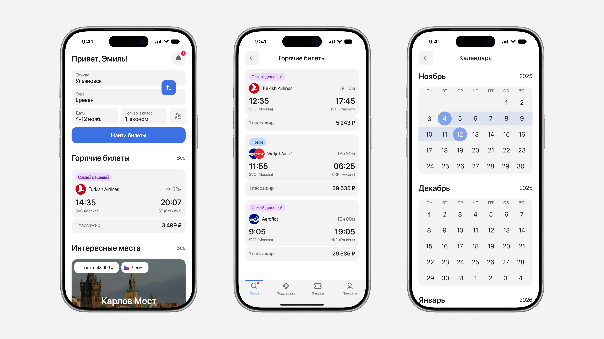
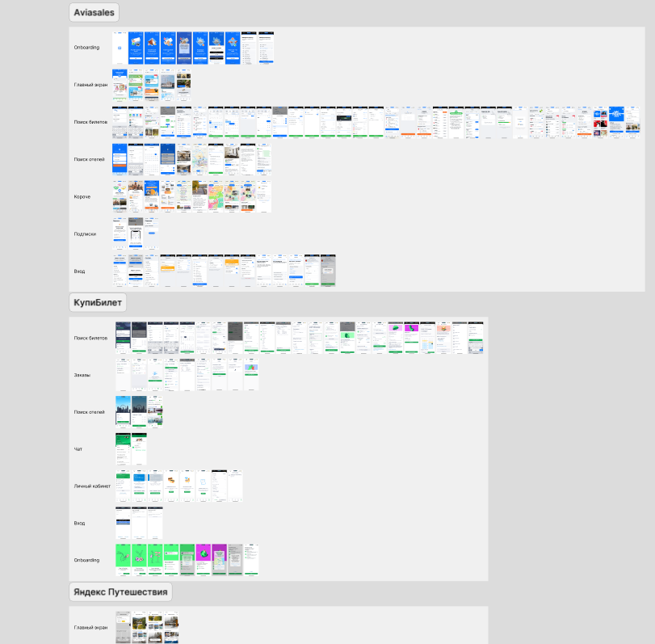

Понимание проблемы
Пассажирам приходится выполнять несколько действий на разных сервисах: искать рейсы, сравнивать варианты, оформлять билеты, выбирать места и отслеживать информацию о предстоящих перелётах.
Идея
Я разработал концепцию мобильного приложения, которое объединяет весь процесс организации перелёта в одном месте. Пользователи могут искать и бронировать авиабилеты, выбирать места, хранить электронные билеты и получать актуальную информацию о предстоящих рейсах через простой и интуитивно понятный интерфейс.

Анализ конкурентов
Сначала я провёл анализ конкурентов, чтобы понять, какие решения уже существуют на рынке и где остаются точки роста.

Aviasales: Приложение обладает аккуратным интерфейсом и удобной навигацией. Однако сценарий бронирования слишком затянут, а главному экрану не хватает воздуха.
КупиБилет: Слабая визуальная иерархия карточек и избыточная текстовая нагрузка на компоненты.
Яндекс Путешествия: В целом, интерфейс использует привычные паттерны и выглядит визуально привлекательно. Основным крючком удержания аудитории становится интеграция в экосистему Яндекс Плюса, позволяющая пользователям экономить за счёт кросс-сервисных баллов.
Формулировка гипотез
1. Если мы объединим параметры фильтра в один шаг, то время первого поиска сократится условно на 20%, потому что пользователи реже будут отваливаться.
Визуальная концепция
Проектирование началось со сбора визуальных и функциональных референсов. Я проанализировал лучшие практики для ключевых компонентов: карточек билетов, лид-форм, модулей поиска и экранов регистрации. На основе собранных рефов были составлены интерфейсные френки для каждого пользовательского сценария.

Дизайн-система
После визуальной концепции я начал собирать компоненты для своего проекта. Всего было спроектировано порядка 150 шт. Начал с базовых элементов: иконок, кнопок, полей ввода и ячеек списка, а из них собрал составные: карточки билетов, модальные окна, календарь и таб-бар.